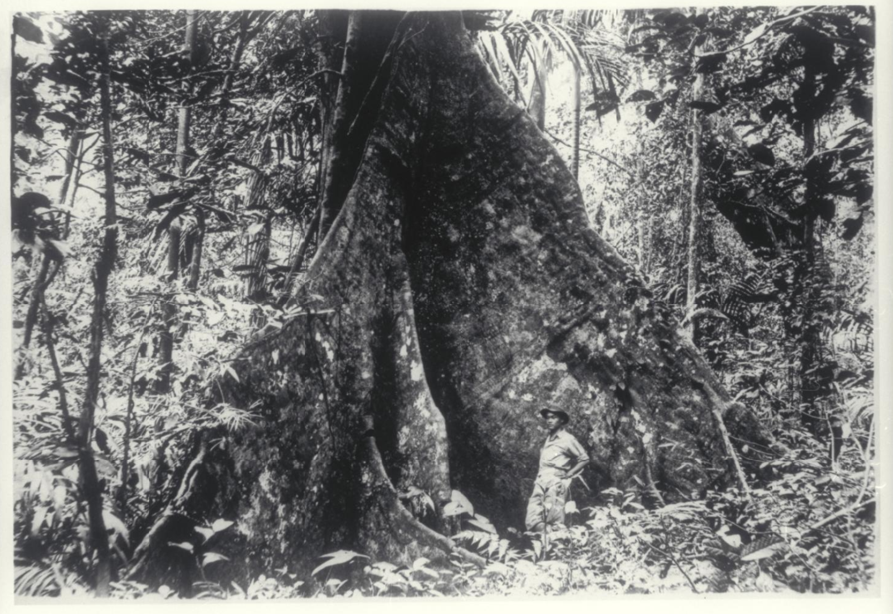
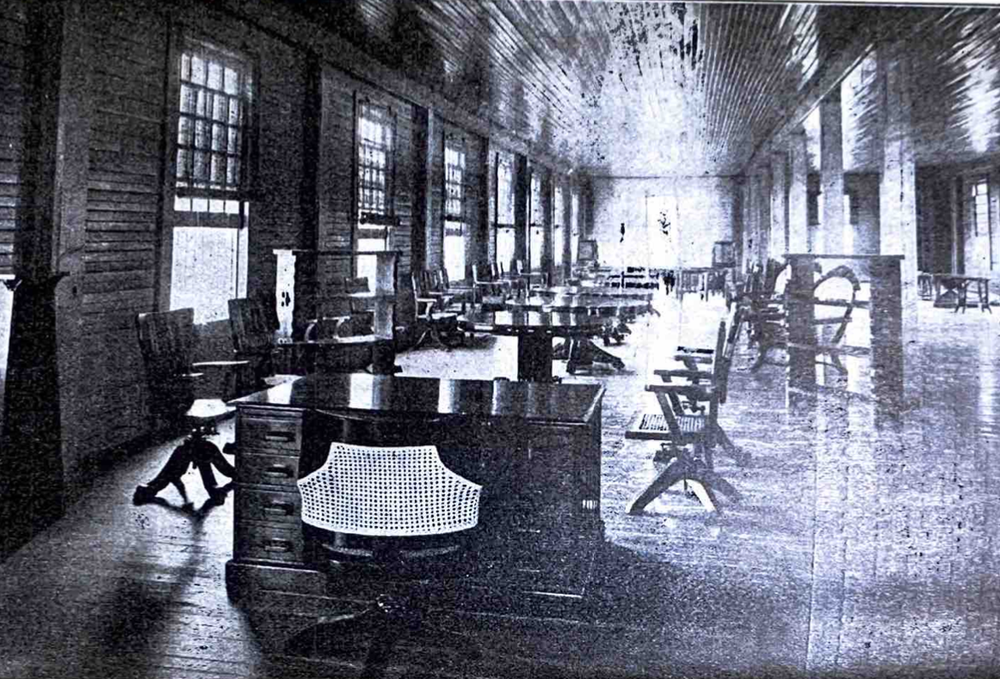

In this digital research project, I aim to track the modes of furniture production in the pre-1935 configurations of the Philippine prison system, from the harvesting of nara wood to its processing as a useable material to the ultimate fabrication of desirable pieces of furniture marketed to national and international buyers. This interactive project will utilize existing archival materials overlaid and interwoven onto maps of the Philippine carceral network to recover the modes of labor that were politically constructed and physically forced in an American-style (and thus extremely efficient) military carceral regime. By illuminating these modes of production through design, I aim to draw attention to both the complex history of rattan furniture design, as well as the political and economic project of incarceration in a colonized setting.
In 1924, the Philippine Bureau of Corrections published and disseminated a Catalogue of Products of the Industrial Division of Bilibid Prison, and General Information Relative to the Bureau of Prisons under the direction of then-director of Prisons, Ramon Victorio. By the time the catalogue was released, the Philippine carceral network had established a full line of products whose materials and fabrication were entirely done by forced prison labor, particularly rattan chairs, beds, desks, and lamps that were in high demand by both the national and international elite.
Rattan muffin stands and table. From 'Catalogue of Products of the Industrial Division of Bilibid Prison, and General Information Relative to the Bureau of Prisons,' 1924.
Old growth narra tree (pterocarpus indicus). Narra was sourced from around the Philippines by the Bureau of Forestry, and was crafted into tables, chairs, beds, and other furniture by incarcerated craftspeople in Bilibid Prison. Date unknown.
Interior of Sales Division, Bilibid Prison. From 'Catalogue of Products of the Industrial Division of Bilibid Prison,' 1924.